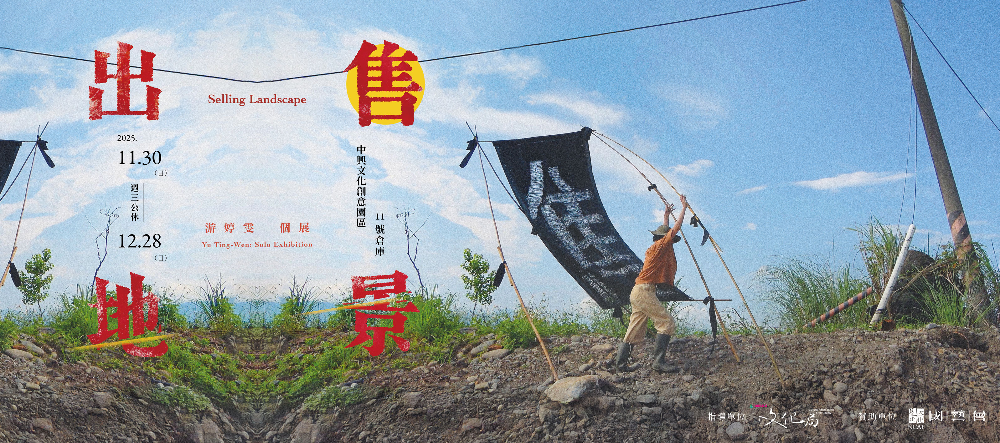
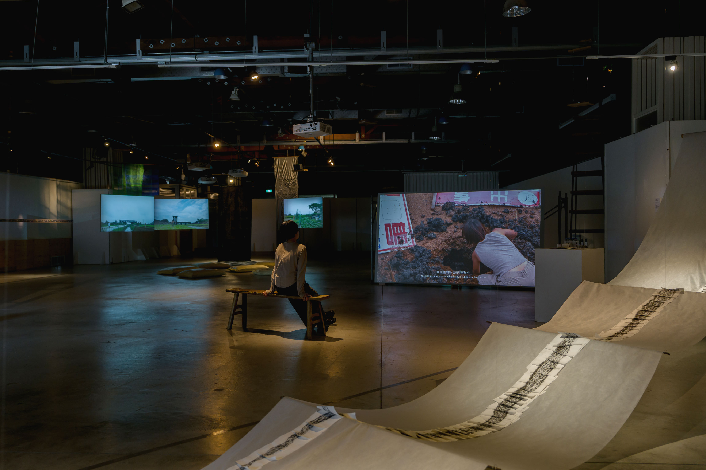
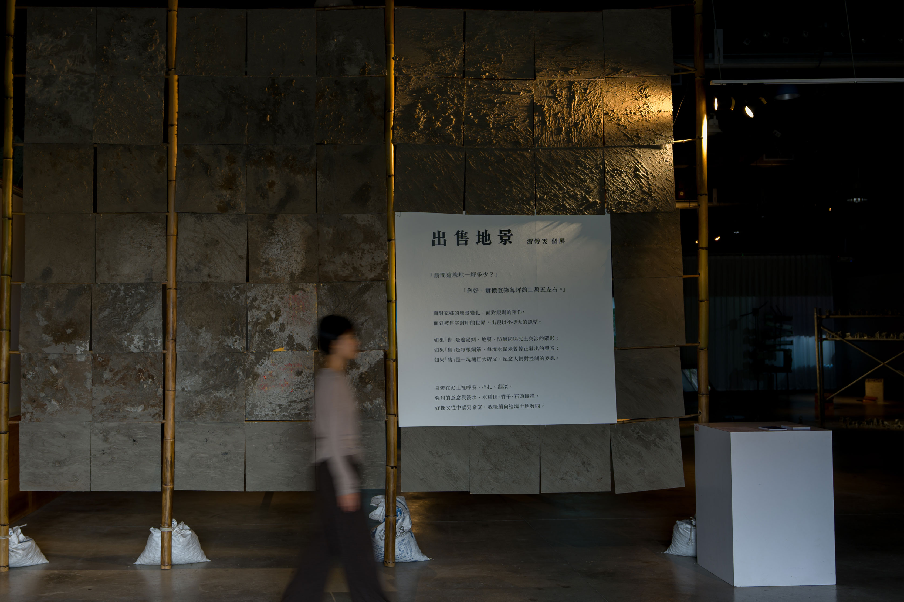
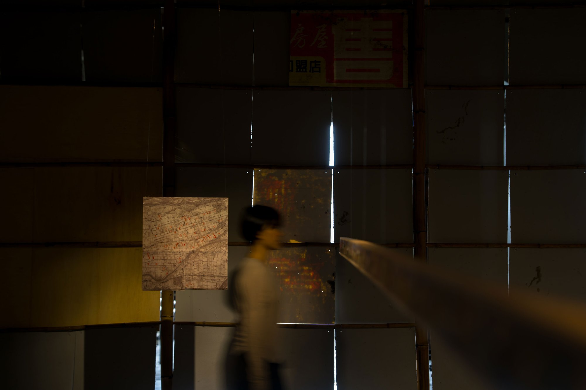
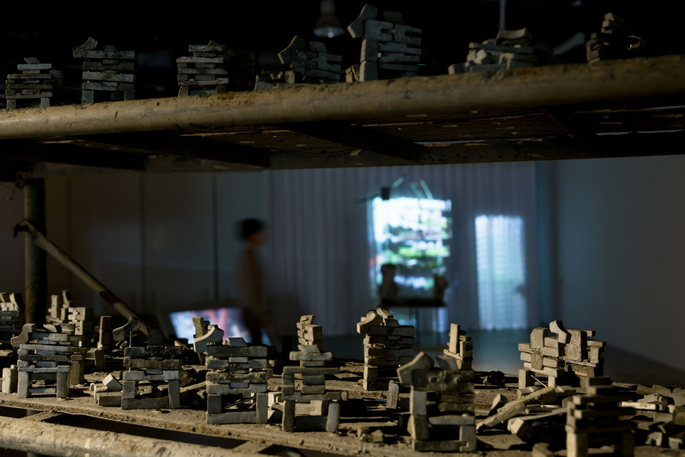

《出售地景》游婷雯個展
Selling Landscape – YOU Ting-Wen Solo Exhibition

「請問這塊地一坪多少？」
「您好，實價登錄每坪約二萬五。」
面對家鄉的地景變化，面對規則的運作，面對被售字封印的世界，
出現以小搏大的絕望。
如果「售」是遮陽網、地膜、防蟲網與泥土交涉的蹤影；
如果「售」是每根鋼筋、每塊水泥未曾停止發出的聲音；
如果「售」是一塊塊巨大碑文，紀念人們對控制的妄想。
身體在泥土裡呼吸、掙扎、翻滾，
強烈的意念與溪水、水稻田、竹子、石頭碰撞，
好像又從中感到希望，我繼續向這塊土地發問。
“How much is this piece of land per square meter?”
“Good day, according to the official price registration, it’s about 7,500 NTD per square meter.”
Facing the change of my hometown’s landscape, facing the operation of rules, facing a world sealed by the word “售 (For Sale)”, there emerges a desperate struggle of the small against the vast.
If “售” traces the negotiations between shade nets, plastic mulch, insect-proof nets, and soil;
If “售” is the ceaseless sound emitted by every steel bar and every fragment of concrete;
If “售” is a monumental inscription, commemorating people’s delusion of control.
The body breathes, wrestles, and twists within the soil.
Fierce intentions collide with streams, rice paddies, bamboo, stones— and from within arises a sense of hope. I continue to question this land.



